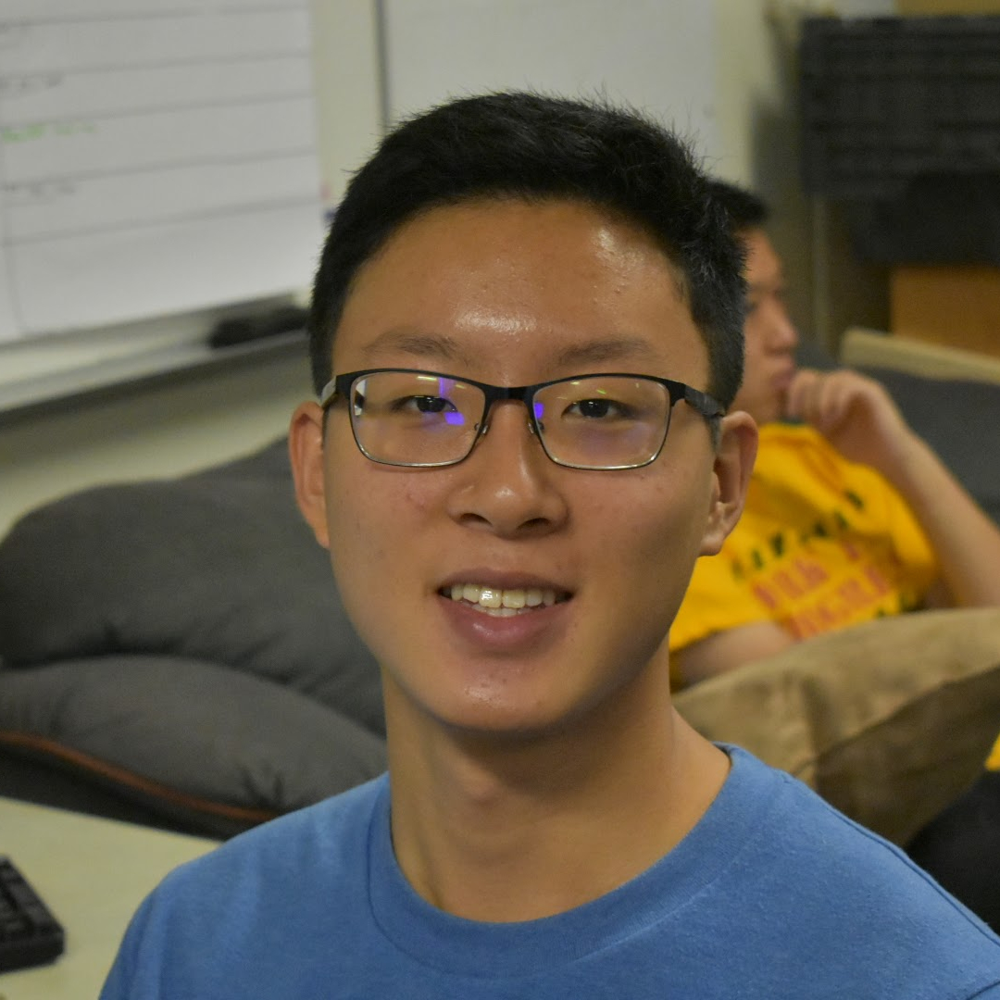
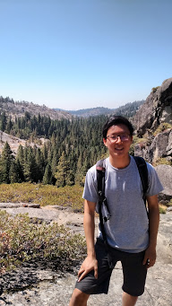
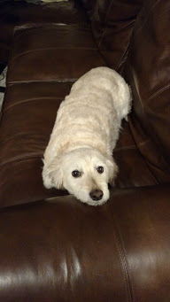
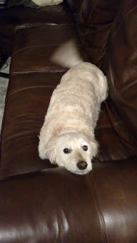
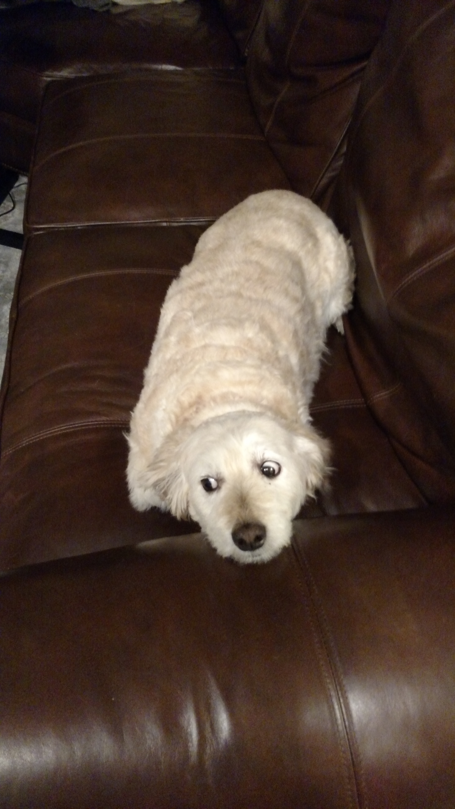

Hello! I'm an undergrad at U.C. Berkeley studying Electrical Engineering and Computer Science. This past summer, I worked as an Architecture Intern in Nvidia's Tegra SoC group. I am a UGSI (also known as a TA) for CS 61C, having TAed for CS 61A in the past, and the Director of Software Engineering at Pioneers in Engineering (check out our Github!). My CS interests lie at the intersection of hardware and software, mainly in computer architecture and broadly in computer engineering. This is what I look like:
 Here's what my dog Toby looks like:
  